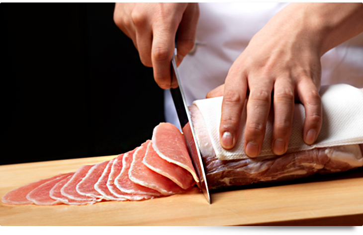

<thml>
<head>
<title>千錘百鍊的技術</title>
</head>
<body>
豬排是日本美食文化之一 ，每塊豬排孕含豐富極致的味道。<p>
勝博殿發揮素材之美味的高超烹飪，其秘訣是在材料裏上花瓣般蓬鬆的麵包粉，<p>
從油裡取出之後，其餘溫炸熟使炸豬的豬排外脆內嫩，非常好吃。<br>
<hr>



<a href="2nd.html">勝博殿品牌小故事</a>
<a href="3rd.html">經典食材</a>
<a href="index.html">首頁</a>
<a href="5th.html">心得</a>


</body>
</thml>

